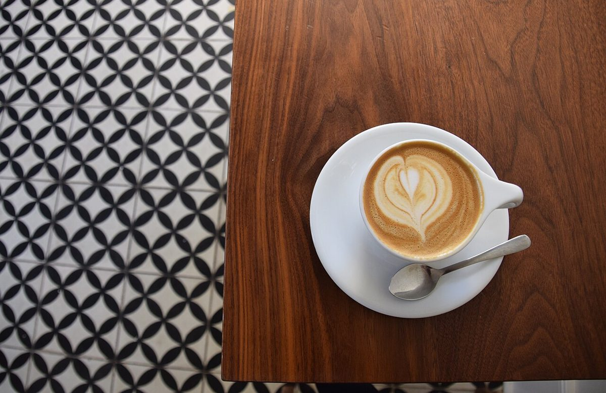
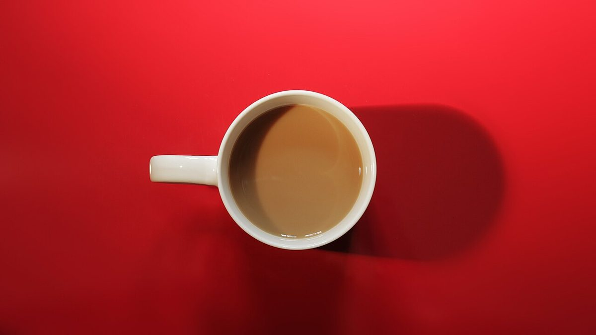

Eはどちらに開いていますか?
→ 右
カフェ / 茨城県龍ケ崎市
5ENCAFE
茨城県龍ケ崎市にあるカフェ「5EN CAFE」のご案内ページです。営業時間やメニューなど、詳しいことは準備中。電話とInstagramで、お店のことを確認できます。

0.1
制作側の連想
「5EN」を、視力表のように。
屋号の由来は分かりません。制作側は、数字の「5」と文字の「E」「N」が並ぶ表記を見て、視力検査の表を連想しました。Eの向きを答える、あの表です。このサイトでは、ページごとにEの向きが変わり、段が下がるほど文字が小さくなります。制作側の連想で、お店の理念・由来とは無関係です。
0.2
写真(イメージ)
カップの並ぶ一段。
写真は龍ケ崎市のお店のものではありません。撮影地不明のフリー素材で、提供メニューを示すものでもありません。

0.3
ご案内
確認できていること。
| 所在地 | 〒301-0004 茨城県龍ケ崎市馴馬町２９７１−２ |
|---|---|
| 電話 | 0297-84-1551 |
| 営業時間 | 準備中 |
| 定休日 | 準備中 |
| ご予約 | 準備中 |
| 駐車場 | 準備中 |
| SNS | Instagram @5encafejapan |
0.5
1.0
いちばん下の段まで読めたら、あとは電話かInstagramで。Instagram @5encafejapan